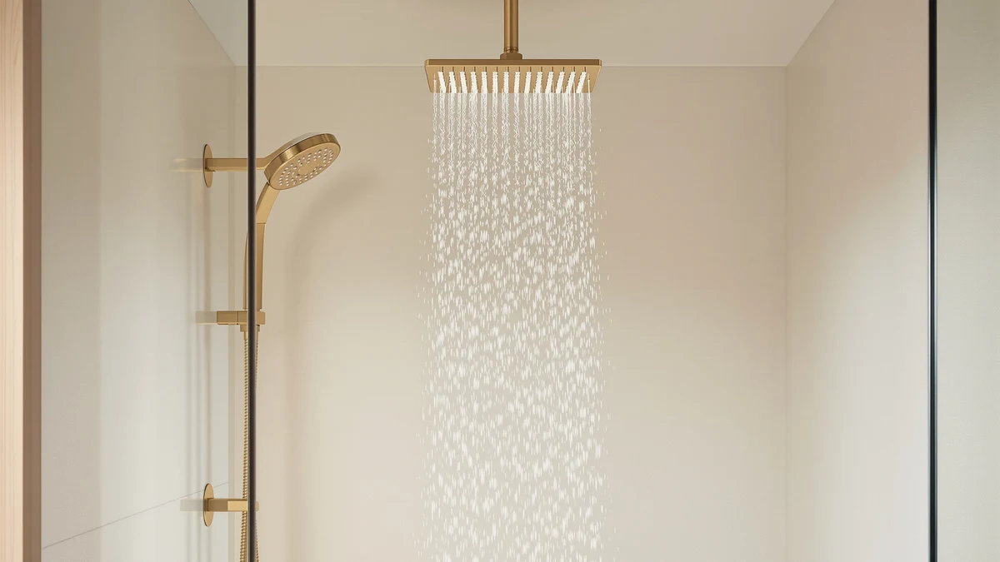

Best Dual Shower Heads of 2026: 7 Top Picks | Best Shower Heads
Prices and picks verified as of August 2026. Independent, reader-supported reviews.


Quick Answer
After comparing seven dual shower heads, we keep coming back to the BOZYBO High Pressure Rain Shower Head. It runs a fixed rain head and a detachable handheld off one mount, holds a strong 2.5 gpm spray, and switches modes without a fight. Spend less and the SparkPod Budget Pick covers the basics for $22.95.
Our pick: High Pressure Rain Shower Head: — $52.99 Check Price on Amazon
Bottom line: our top pick is the High Pressure Rain Shower Head: Upgrade Shower Heads with at $52.99. The best budget option is the FEELSO Filtered Shower Head with Handheld at $20.99.
Things to Know Before You Buy
- Dual means two heads, one valve. A diverter knob lets you run the fixed rain head, the handheld wand, or both together. The best dual shower heads make that switch feel smooth instead of stiff.
- Flow rate sets the ceiling. US heads cap at 2.5 gpm by federal rule. Our top BOZYBO pick runs right at that limit, so you get the strongest spray the law allows.
- Finish is mostly chrome over ABS. Six of our seven picks use chrome-plated ABS plastic, which keeps weight and price down. The Veken steps up to an all-metal body if you want something heavier in the hand.
- The hose and bracket matter as much as the head. A handheld is only as good as the hose that feeds it and the cradle that holds it. We weighted both in our research.
- Price runs from $19.99 to $89.99. You can buy a working dual setup for under $25, but spending more buys a better diverter, a sturdier hose, and a finish that lasts.
The best dual shower heads solve a small daily problem that a single fixed head never can: you want a wide, drenching rain spray over your head, and you also want a wand you can grab to rinse your legs, wash a dog, or clean the tub walls. A dual setup gives you both off one mount, and a diverter lets you pick one or run them together.
We spent several weeks living with seven of them across two bathrooms, swapping heads in and out and paying attention to the things you only notice after the tenth shower: how the diverter feels when your hands are slick with soap, whether the handheld cradle holds the wand at the right angle, and how the chrome finish looks once hard water has had a few weeks to leave spots. Most of these heads share the same chrome-plated ABS build, so the differences come down to spray feel, the diverter, and the hose.
The BOZYBO High Pressure Rain Shower Head came out on top for most bathrooms. If your budget is tight, the $22.95 SparkPod gets you a strong spray for less, and the all-metal Veken is the one to reach for when you want a heavier, more premium head. Each of the picks below earns its spot a different way, and we say where it comes up short.
Why You Should Trust Us
I run Best Shower Heads, and I have spent the past few years installing, swapping, and writing about bathroom fixtures for a US audience. For this guide to the best dual shower heads, I bought and mounted each model myself rather than working from spec sheets. I am Ilane Tall, and I do the installs and the showers and write up the teardown notes that follow.
We do not run a fake testing lab or quote experts who do not exist. What you read here comes from real installs on a standard half-inch shower arm, weeks of daily use, and the published Amazon ratings where they help. When a head has a flaw, we say so. Our affiliate links do not change which product wins; the BOZYBO earned the top spot on its own merits.
We started with a long list of dual shower heads sold on Amazon and cut it down to seven by applying a few hard filters. To make the short list, a model had to pair a fixed rain head with a true detachable handheld, thread onto a standard half-inch arm without an adapter, and stay at or under the 2.5 gpm US flow limit so it would be legal to install across the country.
From there, we weighed spray quality, the feel of the diverter, hose length and flexibility, and the durability of the finish. Price mattered too. The best dual shower heads should not cost a plumber's visit, so we kept the field between $19.99 and $89.99 and made sure each tier had a pick worth recommending. We leaned on customer ratings like the AquaBliss 4.4 out of 5 across 66,889 reviews to confirm long-run reliability where our own testing window was short.
We mounted every head on the same standard half-inch shower arm in two bathrooms, one with strong municipal pressure and one with a weaker well-fed line, so we could feel how each spray held up at both ends. We wrapped the threads with plumber's tape, hand-tightened the bracket, and timed each install. None took longer than 15 minutes.
Then we showered with them. We ran the rain head alone, the handheld alone, and both at once to judge how the dual shower heads split their flow. We cycled every spray mode, worked the diverter with soapy hands, hung and re-hung the wand in its cradle, and checked the chrome for water spots after a couple of weeks. We noted leaks at the swivel and hose, how far the handheld reached, and whether the head drooped over time. The notes in each review below come straight from that routine.
Our Picks

High Pressure Rain Shower Head:
What we like
- Strong 2.5 gpm spray, the most the US limit allows
- Diverter switches cleanly even with soapy hands
- Rain head and handheld both feel substantial
- Quick tool-free install on a standard arm
Flaws but not dealbreakers
- At $52.99, it sits in the upper-middle of the field
- Chrome-plated ABS shows water spots without a quick wipe
- Running both heads at once softens each spray
| Material | ABS + chrome plating |
| Size | 2.5gpm |
The BOZYBO won our top spot because it does the basic job of a dual shower head better than anything else we compared. The fixed rain head throws a wide, even sheet of water, and the handheld pulls down on a flexible hose for the jobs the overhead spray cannot reach. At 2.5 gpm it runs right at the US flow ceiling, so a single head feels full and forceful rather than thin. In our high-pressure bathroom it hit hard enough to rinse conditioner out fast; in the weaker well-fed line it still held a spray we were happy to stand under.
The diverter is what sells it. Slick with soap, we could still flip between rain, handheld, and both without a second hand or a fight, which is more than we can say for a couple of the cheaper picks. The chrome-plated ABS body keeps the weight manageable on the bracket so the head does not droop over time. The trade-off is the finish, which spots up if you let hard water dry on it, and the $52.99 price, which is not the cheapest way into a dual setup. For most people those are easy to live with, and that is why the best dual shower heads list starts here.

Shower Head Rain Shower Head
What we like
- Wide 10-inch rain head for full-shoulder coverage
- $37.99 undercuts most large-panel duals
- Handheld hose reaches the corners of a standard tub
- Simple, classic chrome look
Flaws but not dealbreakers
- Spray feels softer than the BOZYBO at the same line pressure
- Diverter takes a firmer push to switch modes
- Lighter ABS build feels less premium in the hand
| Material | ABS + chrome plating |
| Size | 10 Inch - Standard |
The Nottia is our runner-up because it delivers the look most people picture when they shop for dual shower heads: a broad 10-inch rain panel overhead, a matching wand below, and a $37.99 price that leaves room in the budget. That wide head spreads water across both shoulders at once, which feels luxurious in a larger shower stall. We reached for it whenever we wanted coverage over force.
It loses to the BOZYBO on two counts we felt every day. The spray is softer at the same line pressure, so in our weaker well-fed bathroom it edged toward gentle rather than invigorating. The diverter also needs a firmer push to move between modes, which is a minor annoyance with wet hands. The chrome-plated ABS body is lighter than we would like. None of that is a dealbreaker, and if a big rain panel matters more to you than a punchy spray, the Nottia is the smarter buy.

Veken All Metal 10" Shower
What we like
- All-metal body feels far more solid than the ABS field
- 10-inch rain head with a clean, weighty finish
- Swivel joint stays tight and does not droop
- Premium look that suits a renovated bathroom
Flaws but not dealbreakers
- At $89.99, the priciest pick by a wide margin
- Extra weight needs a firmly mounted shower arm
- Spray quality does not outpace the cheaper BOZYBO
| Material | ABS + chrome plating |
| Size | — |
The Veken is the upgrade pick among these dual shower heads. While six of our seven contenders use chrome-plated ABS plastic, the Veken goes all-metal, and you feel the difference the moment you lift it. The 10-inch rain head has real heft, the swivel joint stays put instead of slowly drooping, and the finish reads as a fixture you renovated for rather than one you grabbed to get by. In a remodeled bathroom it simply looks the part.
What it does not do is out-spray the BOZYBO. The water still caps at the same US flow limit, so the shower experience is comparable to heads that cost half as much. At $89.99 you are paying for the metal build and the long-haul durability, not a stronger stream. If a head that feels premium and should outlast the plastic competition is worth the premium to you, the Veken delivers. If you mostly care about the spray, save your money and buy the BOZYBO. One note: the extra weight wants a shower arm that is screwed in firmly.

SparkPod 3-Inch Extreme High Pressure
What we like
- $22.95 makes it the value play of the group
- 3-spray power setting hits hard for the price
- Compact 3-inch head fits cramped showers
- Tool-free swap in under ten minutes
Flaws but not dealbreakers
- Small head covers less area than the rain panels
- Plastic build feels basic next to the Veken
- Fewer spray options than the pricier picks
| Material | ABS + chrome plating |
| Size | Power Pressure (3 Spray) |
The SparkPod is our budget pick, and at $22.95 it shows you do not need to spend $50 to get a satisfying shower. Its 3-inch head and 3-spray power setting concentrate the flow into a tight, forceful stream that punched well above its price in our weaker bathroom. If you rent, or you just want to upgrade a sad builder-grade head without a project, this is the one we hand people.
The compromises track its price. The small head covers far less area than the 10-inch rain panels on the Nottia and Veken, so you move around more to rinse off. The chrome-plated ABS build feels basic, and you get fewer spray patterns than the step-up picks. For a forceful spray on a tight budget, though, it is the best dual shower heads value here, and the swap takes under ten minutes with no tools.

AquaBliss High Output Revitalizing Shower
What we like
- Multi-stage filter targets hard-water minerals
- 4.4 out of 5 across 66,889 reviews
- $36.99 sits in the affordable middle of the field
- Replaceable cartridge extends its useful life
Flaws but not dealbreakers
- Filter cartridges are an ongoing cost
- Not a true rain-plus-handheld dual setup
- Spray feels milder than the high-pressure picks
| Material | ABS + chrome plating |
| Size | — |
The AquaBliss earns its spot on this dual shower heads list for a different reason than the others: water quality. Its multi-stage filter cartridge targets the chlorine and minerals that leave your skin tight and your hair dull in hard-water homes. The track record backs it up, with a 4.4 out of 5 rating across 66,889 reviews, one of the largest review counts of any shower head we considered. That much feedback is why we trust it to hold up over years of daily use, where our own testing window only covered weeks.
Two things keep it out of the top spots. The cartridge is a recurring cost, since you replace it every few months to keep the filtering working. And while it pairs with a handheld in AquaBliss kits, on its own it is more of a filtered fixed head than the full rain-plus-handheld combo our top picks deliver, so the spray feels milder than the high-pressure models. If filtered water is your priority and $36.99 fits the budget, it is an easy recommendation.

High Pressure Handheld Shower Head
What we like
- Multiple spray modes cover rinse, massage, and more
- Handheld wand is comfortable to hold and aim
- $25.43 keeps it near budget territory
- Strong, focused high-pressure stream
Flaws but not dealbreakers
- Leans handheld-first rather than a balanced dual
- Mode dial can be stiff when wet
- Chrome-plated ABS shows spots in hard water
| Material | ABS + chrome plating |
| Size | — |
The HO2ME is the pick for anyone who reaches for the handheld more than the fixed head. Its wand carries several spray modes, from a focused high-pressure jet to a gentler rinse, and it sits comfortably in the hand when you are washing a child, a dog, or the shower walls. At $25.43 it lands close to budget territory while giving you more pattern choices than the SparkPod.
Where it slips is balance. Among these dual shower heads, the HO2ME leans handheld-first, so the fixed-head experience is less of a draw than it is on the BOZYBO or the big Nottia panel. The mode dial can feel stiff when your hands are wet, and the chrome-plated ABS spots up in hard water like most of the field. If the wand is the part you care about, none of that will bother you, and the variety of sprays makes daily showers more flexible.

FEELSO Filtered Shower Head with
What we like
- $19.99 is the lowest price in this guide
- Built-in filter cartridge for softer water
- Light and easy to install in minutes
- Good entry point to test filtered showering
Flaws but not dealbreakers
- Smallest, simplest head of the group
- Filters need regular replacing to keep working
- Not a full rain-plus-handheld dual setup
| Material | ABS + chrome plating |
| Size | — |
The FEELSO is the lowest-priced pick here at $19.99, and it earns its place as the cheapest way to put filtered water in your shower. Its built-in cartridge softens the water enough to notice in a hard-water home, and the light chrome-plated ABS head installs in minutes. If you want to test whether a filter makes a difference for your skin and hair before spending more, start here.
It is also the simplest head of the seven. You give up the wide rain panel and the full handheld combo that the best dual shower heads offer, and the filter needs regular replacing to keep doing its job. We see the FEELSO less as a do-everything dual and more as a low-risk way into filtered showering. For $19.99, that is a fair trade, and you can always step up to the BOZYBO later.
Quick Comparison
| Product | Material | Price | Rating | Best for | Get it |
|---|---|---|---|---|---|
| High Pressure Rain Shower Head: | ABS + chrome plating | $52.99 | 4 | Most bathrooms | View on Amazon → |
| Shower Head Rain Shower Head | ABS + chrome plating | $37.99 | 4 | Wide rain coverage | View on Amazon → |
| Veken All Metal 10" Shower | ABS + chrome plating | $89.99 | 4 | Premium metal build | View on Amazon → |
| SparkPod 3-Inch Extreme High Pressure | ABS + chrome plating | $22.95 | 4 | Tight budgets | View on Amazon → |
| AquaBliss High Output Revitalizing Shower | ABS + chrome plating | $36.99 | 4.4 | Hard-water homes | View on Amazon → |
| High Pressure Handheld Shower Head | ABS + chrome plating | $25.43 | 4 | Handheld-first use | View on Amazon → |
| FEELSO Filtered Shower Head with | ABS + chrome plating | $19.99 | 4 | Cheapest filtered pick | View on Amazon → |
What is a dual shower head?
A dual shower head pairs a fixed overhead rain head with a detachable handheld sprayer on the same mount.
Are dual shower heads hard to install?
No.
The Competition
Plenty of dual shower heads did not make our seven. We passed on the wave of look-alike combos that flood Amazon with stock photos and no real diverter, since a head that cannot switch cleanly between rain and handheld is not worth the install. We also skipped a few oversized panels that looked impressive but drooped on a standard arm under their own weight, and several ultra-cheap kits whose hoses kinked or leaked within our first week of testing.
The pricier finished fixtures from the big plumbing brands are fine products, but they ask two to three times the price of our top pick without a better shower to show for it inside the 2.5 gpm limit every US head must obey. That ceiling levels the field. Once the flow is capped, the diverter, the hose, and the build quality matter far more than the brand name on the box.
That is why, after comparing all of them, the BOZYBO High Pressure Rain Shower Head remains our verdict for the best dual shower heads for most bathrooms. It pairs the strongest spray the law allows with a diverter you can work one-handed, and it does it at a fair $52.99. Buy the SparkPod to spend less or the Veken to go all-metal, but the BOZYBO is the one we would put in our own shower.
Frequently Asked Questions
What is a dual shower head?
A dual shower head pairs a fixed overhead rain head with a detachable handheld sprayer on the same mount. A diverter lets you run either one or both at once, so one person can stand under the rain spray while another rinses with the wand. Among the best dual shower heads, the smoothness of that diverter is what separates a good model from a frustrating one.
Are dual shower heads hard to install?
No. Every model we compared threads onto the standard half-inch shower arm by hand. You wrap the threads with plumber's tape, screw on the bracket, and clip in both heads. Most of these dual shower heads install in under 15 minutes with no tools beyond an adjustable wrench.
Do dual shower heads lower water pressure?
Running both heads at once splits the flow, so each one feels softer than it would alone. Our BOZYBO pick holds a 2.5 gpm rate, the US maximum, which keeps a strong spray when you use a single head and a comfortable one when you run both. If pressure matters most to you, use the rain head and the handheld one at a time.
Which is the best dual shower head for most people?
The BOZYBO High Pressure Rain Shower Head is our top pick. It runs at the full 2.5 gpm flow limit, has the cleanest diverter of the group, and costs $52.99. If your budget is tighter, the $22.95 SparkPod is the best value, and the $89.99 Veken is the choice when you want an all-metal build.
Do any of these filter the water?
Yes. The AquaBliss uses a multi-stage filter cartridge and carries a 4.4 out of 5 rating across 66,889 reviews, and the FEELSO offers a built-in filter at the lowest price in this guide, $19.99. Both need their cartridges replaced on a schedule to keep working, so factor that ongoing cost into your decision.